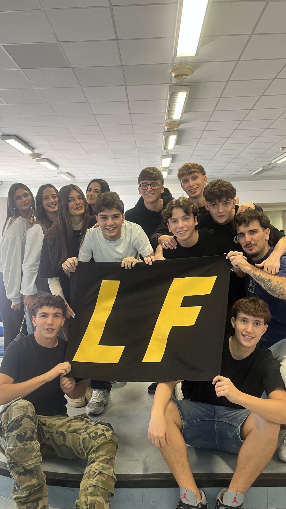
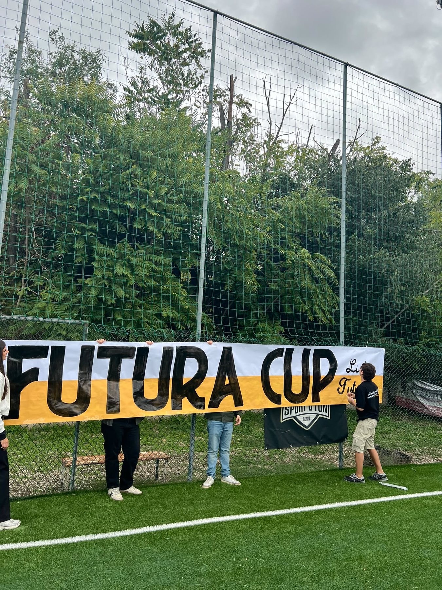

SCHOOL
CARD
La raccolta degli sconti che Lista Futura offre tramite convenzioni nel quartiere. Non è solo risparmio: è il filo che lega l’Orazio al territorio. Il nostro impegno è ampliare la rete ascoltando le vostre esigenze.
UNA SCUOLA. UNA COMUNITÀ. UN FUTURO.
Guardiamo avanti, senza dimenticare da dove veniamo. Questa è Lista Futura.
GUARDIAMO AVANTI, INSIEME

IL FUTURO SI COSTRUISCE INSIEME.Un nome che guarda avanti, ma che nasce da una storia.
L’anno scorso volevamo chiamarci Ianus, come la divinità dai due volti. Oggi quella stessa idea vive nel nostro simbolo: il cavaliere che guarda al passato e nel nome Futura, che punta dritto al domani.
Perché crediamo che per costruire il futuro serva prima di tutto ricordare da dove si parte.
Il cavaliere rappresenta ciò che siamo: solidi, presenti, pronti a difendere ciò in cui crediamo, ma anche ambiziosi e determinati a muoverci in avanti con costanza, passo dopo passo.
Il suo sguardo doppio è il nostro modo di vedere la scuola: uno rivolto a ciò che c’è da migliorare, l’altro alle possibilità che ancora non si vedono.
Crediamo nella presenza, quella che non è solo esserci, ma esserci davvero: ascoltare, partecipare, proporre. Una presenza che diventa solidità, perché un gruppo è forte solo quando sa sostenersi a vicenda.
Crediamo nell’inclusione, nel costruire una scuola in cui ognuno trovi spazio per la propria voce e le proprie idee, perché le differenze non dividono: arricchiscono.
Crediamo nella concretezza, nel trasformare le parole in progetti reali, nel fare prima ancora di promettere. E crediamo nell’ambizione sana, quella che spinge a voler migliorare, a puntare in alto senza mai perdere di vista ciò che conta davvero.
Ma l’ambizione, da sola, non basta. Serve costanza, la capacità di non mollare, di esserci ogni giorno, di portare avanti gli impegni presi fino in fondo. Serve incisività, la forza di lasciare un segno in ciò che facciamo, e attenzione ai dettagli, perché sono i particolari a trasformare un’idea in qualcosa che resta.
Un risultato costruito insieme.
Grazie a chi ci ha dato fiducia.
LA NOSTRA SQUADRA
IL NOSTRO OBIETTIVO
Un istituto che perde 13 quinte a fronte di sole 4 prime non è solo una statistica: è un segnale d’allarme.
Noi di Lista Futura rispondiamo a una scuola sempre più vuota e piatta con la comunità: un gruppo Orazio coeso, unito e solidale. Vogliamo un ambiente scolastico che sia uno stimolo positivo quotidiano, attraverso eventi, tornei, incontri, corsi e tanto altro.
L’ORAZIO È COMUNITÀ.La raccolta degli sconti che Lista Futura offre tramite convenzioni nel quartiere. Non è solo risparmio: è il filo che lega l’Orazio al territorio. Il nostro impegno è ampliare la rete ascoltando le vostre esigenze.
Raccolte di beni di prima necessità per anziani, famiglie in difficoltà e parrocchie, e collaborazioni con realtà come Salvamamme e altri enti del territorio. Per guardarsi intorno e tendere una mano.
Oltre alla Futura Cup, vogliamo proporre nuovi tornei, come scacchi e basket, con nuove formule e altri sport. Per vivere la scuola anche fuori dalle aule.
Nuovi cestini nel cortile, più attenzione alla raccolta differenziata e una campagna di sensibilizzazione per tutto l’istituto. Prendersi cura degli spazi è rispetto per la comunità.
Eventi serali, incontri nei luoghi frequentati dagli studenti, maggiore coinvolgimento delle sedi succursali e corsi ricreativi autorganizzati. Tante occasioni per stare insieme.
Uno sportello gestito dagli studenti per gli studenti: chi ha difficoltà in una materia può trovare un compagno pronto a dare una mano. Non ripetizioni, ma aiuto tra alunni.

03 / IL TORNEO DELL’ORAZIO
La nostra scuola, le nostre squadre, la voglia di giocare insieme. La Futura Cup è il torneo di calcio di Lista Futura e uno dei momenti in cui la comunità prende vita.
LISTA FUTURA COLLECTION
Cinque maglie, un’unica comunità. Scegli il tuo modello e contattaci per tutte le informazioni.
 01 / 03
01 / 03 02 / 03
02 / 03 03 / 03
03 / 03Per taglie, disponibilità e informazioni, contattaci direttamente. Nessun acquisto o pagamento online.
05 / CONVENZIONI
Una raccolta di convenzioni e sconti per gli studenti dell’Orazio. Perché la comunità non finisce ai cancelli della scuola.
SEGUICI PER GLI AGGIORNAMENTI ↗UNA MANO TRA STUDENTI
Consulta gli appunti condivisi dagli studenti, organizzati per materia e anno.
QUELLO CHE SUCCEDE IN FUTURA
LA NOSTRA STORIA CONTINUA
Il domani inizia ora. Costruiamolo insieme.